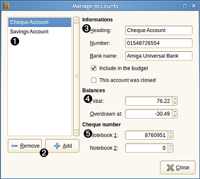

Accounts dialog

The account dialog is used to add, edit and manage the accounts of the current wallet.
Dialog call
This dialog can be called in the following way:
- from the mainwindow-menu: Manage / Accounts
- from the mainwindow-toolbar.
Using wallet dialog
 Account list
Account list
display the actual list of accounts in the wallet. The account at the
top of the list will be the one to be displayed when opening your wallet.
You can easily change the accounts order using Drag&Drop process.
 Buttons
Buttons
 Informations
Informations
 Balances
Balances
 Cheque number
Cheque number